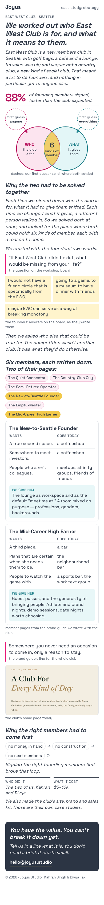
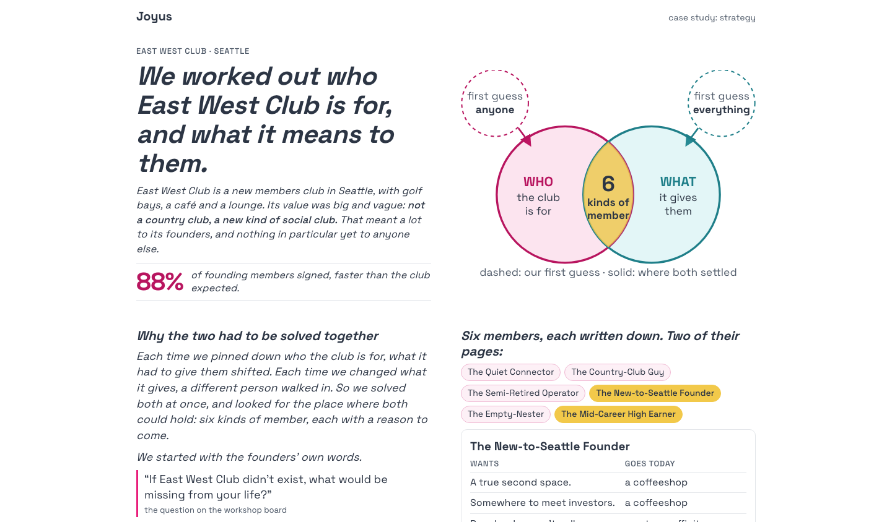
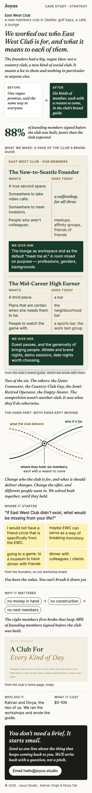
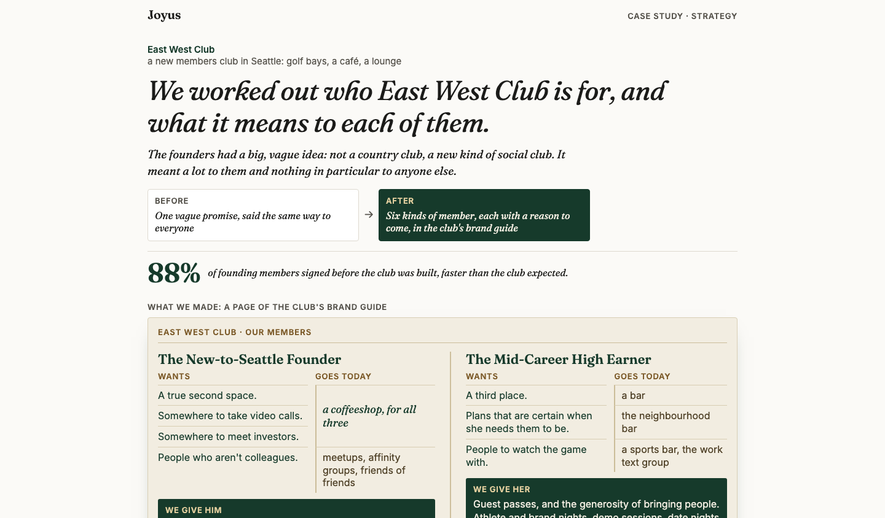
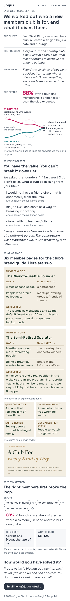
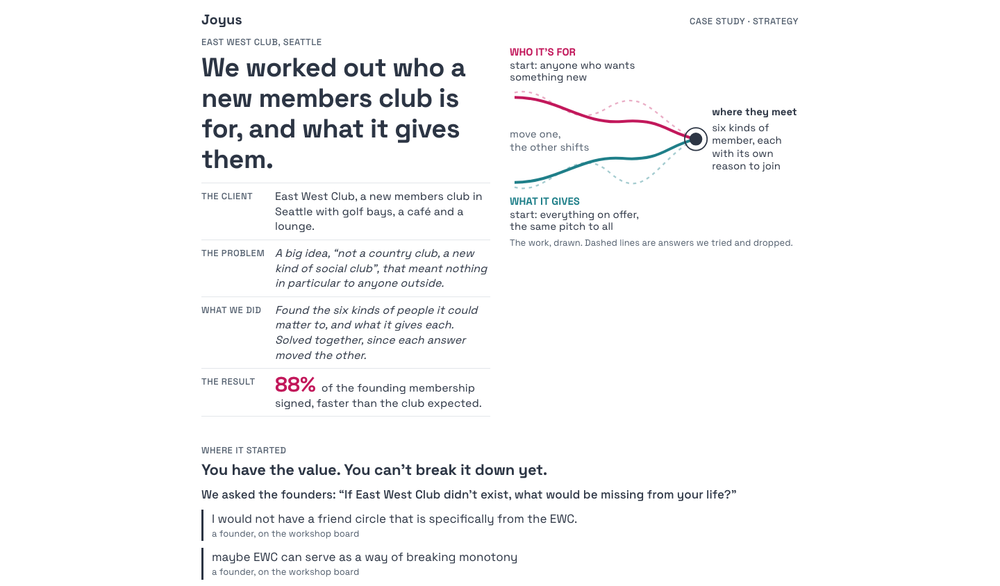
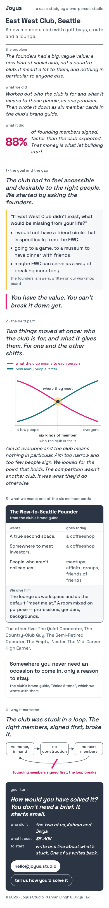
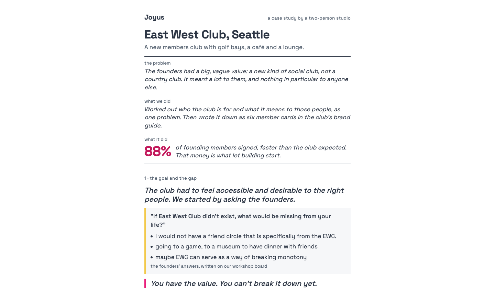

Study 88 · 8 November 2026 · for Kahran
EWC, Kahran's frame: who and what, solved together, four ways
A new brief from Kahran's own framing of the work (brief.md). The goal, the problem, what we did, the hard part, what it did; the insight is that who the club is for and what it gives were solved together, as one moving equation, and everything else on the page is evidence for that. The builders had no earlier studies, only the brief and the source files. Their pages went through the same blind judges as Study 87: two readers on the first phone screen for ten seconds, the 21 bet questions on the whole page from screenshots, then a rank. These are the four that passed, each as built.
"ewc needed to feel accessible and desirable to the right people. This meant to take the big amorphous value of we are making a 'not country club' or new social club and figure out what that meant to people, which also meant you had to figure out who those people were. And then it was a question of solving the equation, if you will, when everything can be moving, because the customer base was moving and the value deliverable was moving, so you have to find a sustainable place of maxima/equilibrium."
Kahran, 8 Nov, the frame (lightly tidied for typing).a · The equation
Ten-second test: 1, 1 · the bet 29 of 42 · shown 1st · 3376px on a phone, 4.0 screens
Leads with the claim in one sentence ("We worked out who East West Club is for, and what it means to them."), the problem in plain words and the 88% on the first phone screen, then the equation as a drawing: two circles, who and what, dashed where we first guessed and solid where both settled, six kinds of member where they meet. Founders' board answers, two member pages from the guide, the club's home page, the price, the close.


b · The Made Page
Ten-second test: 1, 2 · the bet 30 of 42 · shown 2nd · 3338px on a phone, 4.0 screens
The made work is the proof: after the headline, a before and after (one vague promise, then six kinds of member) and the 88%, a full spread of the brand guide's member pages at a readable size, two of the six. The moving equation comes second, drawn: what the club delivers, who it is for, and where they hold. Then where it started (the board), why it mattered (the loop), who did it and what it cost.


c · The Meeting Point
Ten-second test: 1, 1 · the bet 30 of 42 · shown 3rd · 3331px on a phone, 3.9 screens
Opens on four labelled lines (the client, the problem, what we did, the result), so a stranger has the whole case in one screen. Then the meeting point drawn: who it's for and what it gives, each starting broad, "move one, the other shifts", and where they meet. Two member pages ("Member 4 of 6"), the other four by one want each, the loop and the close.


d · Who and what, solved together
Ten-second test: 1, 1 · the bet 28 of 42 · shown 4th · 3222px on a phone, 3.8 screens
The most literal to the frame: numbered sections for the goal and the gap, the hard part, what we made and why it mattered. The hard part is a chart (how many people it fits against what it means to each), with "aim at everyone and it means nothing in particular; aim too narrow and too few sign". One member card, the loop drawn, and "your turn: how would you have solved it?".


How it was put together
Each page is the file the blind judges saw (src/a.html to src/d.html), joined into one page by build.cjs: the asked-for option keeps its own font, style and body, the other three leave the page. Nothing redesigned, no words moved. The notes under each option say what the page does; the scores are the blind readers'. For comparison, Study 87's four scored 1, 1 on the ten-second test and 24 to 30 of 42 on the bet. check.cjs pins the rules: four options, no names, no money but the price and the 88%, no placeholders, no em dash in our words, at most four phone screens.